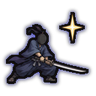
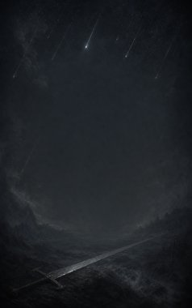
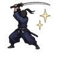
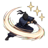
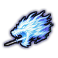
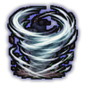
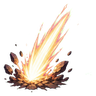
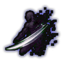

Hoshigiri basics D
D-rank passive. The first lessons of the long blade.

Technique trees › Universal ninjutsu
7 techniques · Taijutsu tab
Open to every ninja. How high a ninja can go depends on their ninja build.

D-rank passive. The first lessons of the long blade.

B-rank passive. The long blade becomes part of the arm.

S-rank passive. Mastery of the long blade: nothing gets close.

B-rank. A lunging thrust with a dragon's head of light, through everyone in the line. (Needs Hoshigiri in hand.)
| Rank | Chakra | Cooldown | Class level |
|---|---|---|---|
| B | 35 | 25 s | 9 |

B-rank. A spinning cut that whips up a small tornado around you. (Needs Hoshigiri in hand.)
| Rank | Chakra | Cooldown | Class level |
|---|---|---|---|
| B | 35 | 25 s | 9 |

A-rank. Leap and fall on one enemy like a shooting star. (Needs Hoshigiri in hand.)
| Rank | Chakra | Cooldown | Class level |
|---|---|---|---|
| A | 55 | 50 s | 13 |

A-rank. A silver cut that unmakes summoned beings and spirits, and hurts anyone else. (Needs Hoshigiri in hand.)
| Rank | Chakra | Cooldown | Class level |
|---|---|---|---|
| A | 55 | 50 s | 13 |